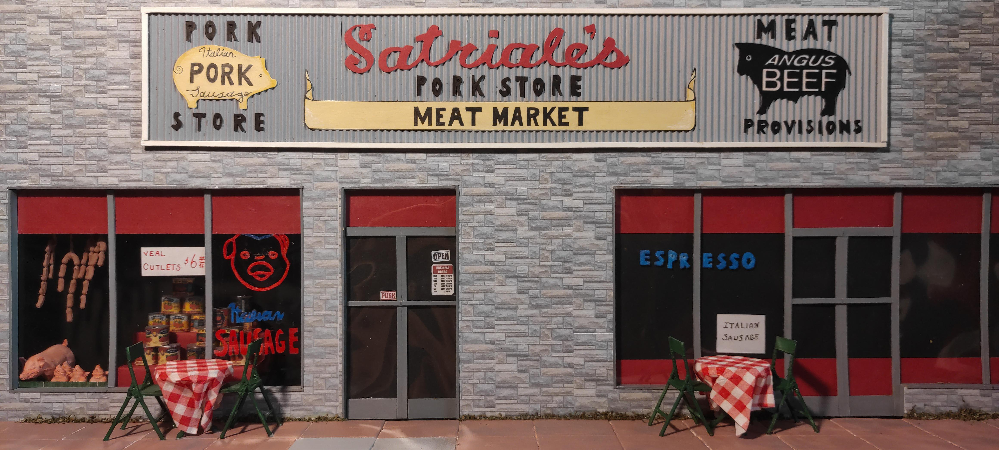

Мясная лавка, основанная в 1956 году в Ньюарке, штат Нью-Джерси. Изначально — небольшой семейный бизнес, который быстро стал местной легендой. Здесь собирались местные жители, обсуждали новости за чашкой кофе и выбирали мясо на семейный ужин.
Лавка получила широкую известность благодаря сериалу «Клан Сопрано» (The Sopranos, 1999–2007), где она стала одним из ключевых мест действия. По сюжету, Satriale's принадлежала семье Сопрано и была местом, где обсуждались семейные дела.
Сегодня мы продолжаем традиции — предлагаем свежее мясо, домашнюю пасту и ту самую атмосферу, за которую полюбили это место миллионы зрителей по всему миру.

Фото: Satriale\'s Pork Store, НьюаркОригинальный адрес: 127 Maple Street, Kearny, NJ (съёмочная площадка сериала). Наша лавка — по тому же адресу.
Satriale's появляется во всех 6 сезонах «Клана Сопрано» — от первого эпизода до финала.
Оригинальная лавка находилась в Kearny, NJ. Здание до сих пор стоит на том же месте.
Satriale's — это не просто лавка. Это место, где переплетаются бизнес, семья и традиции.